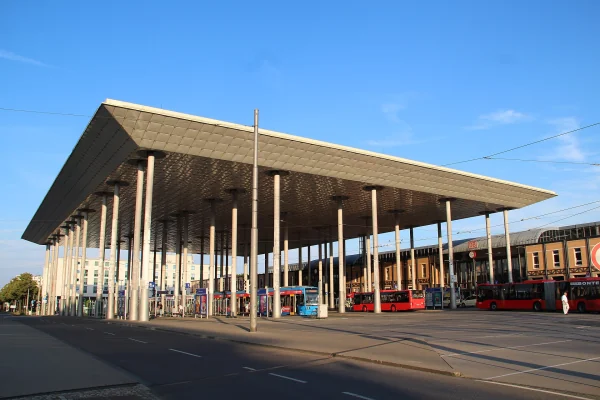

Start / documenta mit Gruppe
Aaron Schiele
geprüft am
geprüft am
Wie groß darf eine Führungsgruppe sein?

Eine Führung durch die Ausstellung hat höchstens 15 Teilnehmende. Für eine Gruppe bis 15 Personen kostet sie pauschal 180 Euro, dazu kommen die Tickets. Größere Gruppen teilst du auf: Ein Reisebus mit 45 Personen braucht drei Führungen, zusammen 540 Euro. Rundgänge in Gebärdensprache haben höchstens zehn Teilnehmende.
Alle Führungen beginnen am Welcome Center am Friedrichsplatz. Mitten in der Innenstadt ist das ein guter Treffpunkt, auch wenn sich die Gruppe danach auf mehrere Führungen verteilt. Wie du eine Gruppenführung buchst, hat die documenta noch nicht veröffentlicht. Fragen beantwortet der Besucherservice unter service@documenta.de.
Was kosten die Tickets für die Gruppe?
Ab elf Tickets bekommt die Gruppe zehn Prozent Rabatt auf jedes Ticket. Aus dem Tagesticket für 29 Euro werden so 26,10 Euro. Für Schulklassen gibt es ein eigenes Ticket für 7 Euro je Schülerin, Schüler oder Lehrkraft, auf das kein Gruppenrabatt mehr kommt. Kinder bis einschließlich zwölf Jahre haben freien Eintritt.
| Ticket | Preis | für die Gruppe |
|---|---|---|
| Tagesticket | 29 Euro | ab elf Tickets 10 Prozent weniger |
| Tagesticket ermäßigt | 19 Euro | ab elf Tickets 10 Prozent weniger |
| 2-Tagesticket | 45 Euro | zwei Tage hintereinander |
| Schulklassenticket | 7 Euro | je Schülerin, Schüler oder Lehrkraft |
| Gruppenführung | 180 Euro | pauschal, bis 15 Personen |
Gut für die Planung: Tickets sind übertragbar. Sagt jemand kurzfristig ab, kann eine andere Person mitfahren. Zurückgegeben werden Tickets grundsätzlich nicht, kauf also nicht mehr, als du sicher brauchst. Jedes Ticket gilt für alle Ausstellungsorte. Kaufen kannst du im Onlineshop der documenta 16, im Fridericianum und in der Tourist Information Kassel, Wilhelmsstraße 23.
Wie kommt die Gruppe nach Kassel?

Mit dem Zug am einfachsten: Der ICE hält in Kassel-Wilhelmshöhe. Während der documenta gibt es 15 Prozent Rabatt auf ICE und IC/EC nach Kassel, wenn ihr über den Buchungslink auf der FAQ-Seite der documenta bucht. Vom Bahnhof Wilhelmshöhe fahren die Straßenbahnen 1, 3 und 4 ohne Umsteigen zum Friedrichsplatz, rund eine Viertelstunde.
Das documenta-Ticket gilt am gebuchten Tag bis Betriebsschluss als Fahrkarte für Bus und Bahn. Die Gruppe braucht also keine eigenen Fahrscheine für die Stadt. Das gilt nicht für das Schulklassenticket: Klassen kaufen Fahrscheine dazu. Wer mit Gepäck anreist, findet am Bahnhof Wilhelmshöhe Schließfächer, die mit Münzen bezahlt werden, 3 oder 4 Euro für 24 Stunden.
Kommt ihr mit dem Bus oder mehreren Autos, empfiehlt die documenta Park & Ride am Stadtrand und die Weiterfahrt mit der Tram. Die nächste Parkmöglichkeit am Friedrichsplatz ist die Tiefgarage Friedrichsplatz. Bleibt die Gruppe über Nacht, steht unter Unterkunft zur documenta, worauf es dabei ankommt.
Wo ist die Kunst, und was ist bei Regen?
Die documenta 16 verteilt sich über mehrere Orte in der Stadt. Welche das sind, steht noch nicht fest. Ein kostenloser Lageplan, online und gedruckt, ist angekündigt. Sobald die Orte bekannt sind, ergänzen wir hier die Wege zwischen ihnen.
Zum Vergleich: 2022 lag ein Teil der Kunst draußen in der Karlsaue, anderes im Fridericianum, in der documenta Halle und in einem alten Hallenbad. Packt also Regenjacken ein. Wenn die Gruppe nach der Führung noch Zeit hat, findet ihr unter Kassel bei Regen Ziele unter Dach.
Barrierefrei mit der Gruppe
Begleitpersonen von Menschen mit Behinderung, die auf Begleitung angewiesen sind, haben freien Eintritt. Wer nicht lange stehen oder warten kann, bekommt mit Nachweis im Welcome Center eine Accessibility Card, die Wartezeiten verkürzt. Die documenta bietet Führungen in Deutscher und Internationaler Gebärdensprache und in Leichter Sprache an. In die Ausstellungsgebäude dürfen keine Tiere, offizielle Assistenzhunde sind überall willkommen.
Liste für die Gruppenleitung
- Termin wählen: Die Ausstellung hat vom 12. Juni bis 19. September 2027 jeden Tag von 10 bis 20 Uhr offen.
- Teilnehmende zählen und in Gruppen von höchstens 15 Personen aufteilen.
- Tickets kaufen: ab elf Tickets 10 Prozent Rabatt, Schulklassen 7 Euro je Person.
- Führung anfragen: pauschal 180 Euro je Gruppe bis 15 Personen.
- Bahn buchen: über den Link der documenta 15 Prozent auf ICE und IC/EC.
- Treffpunkt nennen: Welcome Center am Friedrichsplatz, Straßenbahnen 1, 3, 4, 5, 6 und 8.
- Allen sagen: das Ticket ist am Besuchstag auch die Fahrkarte, außer bei Schulklassen.
- Regenjacken und Ausweise für ermäßigte Tickets einpacken.
Diese Seite druckt sich ohne Menü und Werbung, gut für die Mappe der Gruppenleitung.
Häufige Fragen
Ab wie vielen Personen gibt es bei der documenta 2027 Gruppenrabatt?
Ab elf Tickets bekommt ihr zehn Prozent Rabatt auf jedes Ticket. Ausgenommen ist das Schulklassenticket, das mit 7 Euro ohnehin günstig ist.
Was kostet eine Gruppenführung bei der documenta 16?
Eine Führung kostet pauschal 180 Euro für bis zu 15 Personen, die Tickets kommen dazu. Größere Gruppen buchen mehrere Führungen.
Gilt das documenta-Ticket für die ganze Gruppe in Bus und Tram?
Ja, jedes Ticket gilt am gebuchten Tag bis Betriebsschluss als Fahrkarte für Bus und Bahn. Das Schulklassenticket und die Dauerkarte gelten nicht als Fahrkarte.
Kann ich Tickets umschreiben, wenn jemand absagt?
Ja, Tickets sind übertragbar, nur die Dauerkarte nicht. Zurückgenommen werden sie grundsätzlich nicht.
Wann kommt die Liste der Ausstellungsorte?
Die documenta hat die Orte noch nicht veröffentlicht, ein kostenloser Lageplan ist angekündigt. Wir ergänzen diese Seite, sobald er da ist.
Quellen abgerufen am 17.11.2026
- documenta 16 Häufige Fragen · Tickets · Barrierefreiheit
- KVG Fahrplan Tram 1 und Tram 4
- Deutsche Bahn Schließfächer Kassel-Wilhelmshöhe
- Wikipedia documenta fifteen
Weiterlesen

documenta 2027 Kassel
documenta 16 in Kassel: 12. Juni bis 19. September 2027, täglich 10 bis 20 Uhr. Ticketpreise, Bus und Bahn, Welcome Center und Anreise im Überblick.
Weiterlesen
Kassel bei Regen
Kassel bei Regen: Schloss Wilhelmshöhe, Grimmwelt, Naturkundemuseum, Landesmuseum, Planetarium und Kurhessen-Therme mit Öffnungszeiten und Preisen.
Weiterlesen
Termine Kassel 2027
Alle Termine Kassel 2027 auf einen Blick: 49 Wasserspieltage vom 1. Mai bis 3. Oktober, documenta 16 ab 12. Juni, Zissel vom 30. Juli bis 2. August.
Weiterlesen